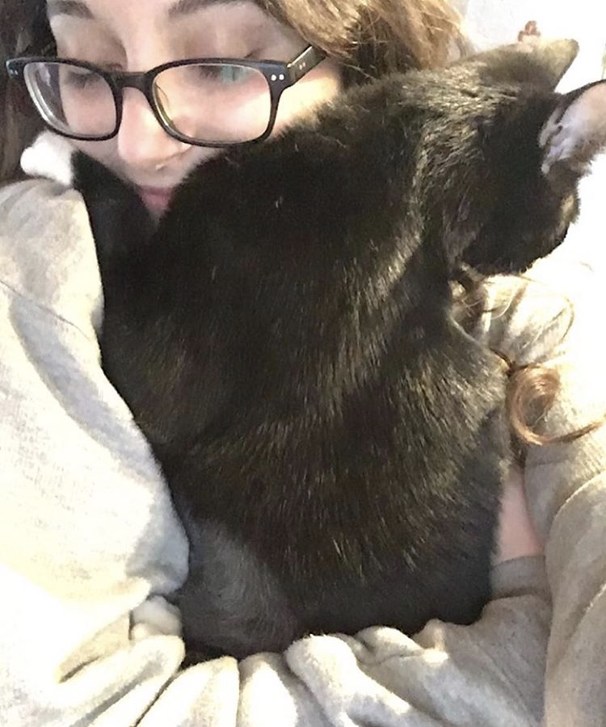
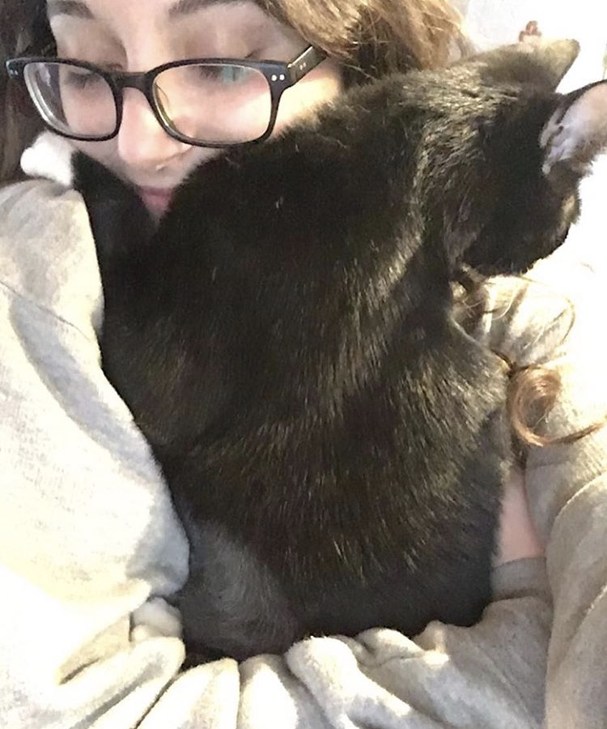

When we first were introduced to this wild kitten I think he knew right as he met us that he would fit right in with us. I say this because he was so quick to play and push every boundary he had with us. Lucifer at first was a secret from my dad for the reason that he wasn't to found of cats and had a reputation with them so we might have locked him my sisters room. Well long story short he was to wild to keep tamed in a room and was heard countless times crying he made it very clear to our father that we had adopted a kitten and were going to make him family. As we began making him apart of our family he learned that love and affection is something we love to show only to our furry friends, but this stubborn little kitten is starting to coupe with it and comes to show you love whenever your comfortable because that means free warmth and comfort to them as well. Although he can have his moments of being a horrible soul he shows to us in very strange and unique ways that only we understand.
 
